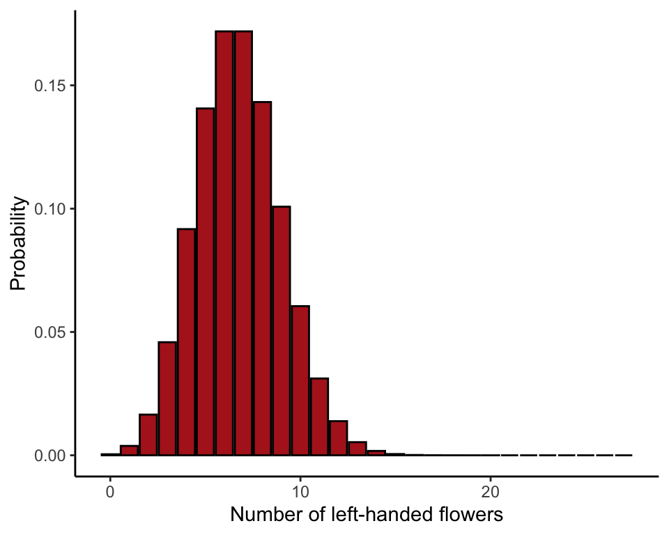
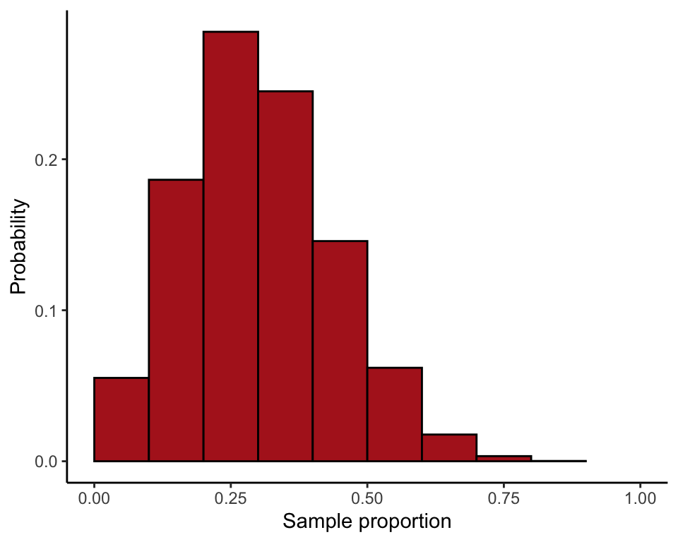
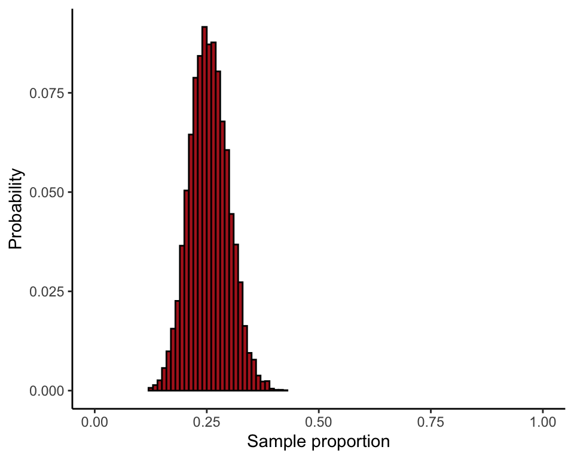

R code for example in Chapter 7:
Analyzing proportions
We used R to analyze all examples in Chapter 7. We put the code here so that you can too.
Also see our lab on how to carry out frequency analaysis in R.
New methods on this page
These are the core commands that produce the new methods described in Chapter 7. The variable names are plucked from the examples further below.
-
Calculating binomial probabilities:
dbinom(6, size = 27, prob = 0.25) -
Binomial test:
binom.test(10, n = 25, p = 0.061) -
Agresti-Coull 95% confidence interval for the proportion:
binom.confint(131, n = 169, method = "ac") -
Other new methods:
- Install an R package.
- Sampling distribution of a proportion by repeated sampling from a known population.
Load required packages
We’ll use the ggplot2 add on package to draw many plots, and the binom package to calculate a confidence interval for a proportion using the Agresti-Coull method. They need to be loaded only once per session.
You might need to install the binom package on your computer if you have not already done so.
install.packages("binom", dependencies = TRUE) # only if not yet installedlibrary(binom)
library(ggplot2)7.1 Binomial distribution
Calculate a binomial probability, the probability of obtaining \(X\) successes in \(n\) trials when trials are independent and probability of success \(p\) is the same for every trial.
Binomial probability
This uses Example 6.4 on mirror image flowers. The probability of getting exactly 6 left-handed flowers when \(n = 27\) and \(p = 0.25\) is
dbinom(6, size = 27, prob = 0.25)## [1] 0.171883Table of probabilities
Tabulate the probability distribution of all possible values for the number of left-handed flowers out of 27 (Table 7.1-1).
xsuccesses <- 0:27
probx <- dbinom(xsuccesses, size = 27, prob = 0.25)
probTable <- data.frame(xsuccesses, probx)
probTable## xsuccesses probx
## 1 0 4.233057e-04
## 2 1 3.809751e-03
## 3 2 1.650892e-02
## 4 3 4.585812e-02
## 5 4 9.171623e-02
## 6 5 1.406316e-01
## 7 6 1.718830e-01
## 8 7 1.718830e-01
## 9 8 1.432358e-01
## 10 9 1.007956e-01
## 11 10 6.047736e-02
## 12 11 3.115500e-02
## 13 12 1.384667e-02
## 14 13 5.325641e-03
## 15 14 1.775214e-03
## 16 15 5.128395e-04
## 17 16 1.282099e-04
## 18 17 2.765311e-05
## 19 18 5.120947e-06
## 20 19 8.085705e-07
## 21 20 1.078094e-07
## 22 21 1.197882e-08
## 23 22 1.088984e-09
## 24 23 7.891188e-11
## 25 24 4.383993e-12
## 26 25 1.753597e-13
## 27 26 4.496403e-15
## 28 27 5.551115e-17Histogram of probability distribution
This illustrates the binomial distribution for the number of left-handed flowers when \(n = 27\) and \(p = 0.25\) (Figure 7.1-1).
ggplot(probTable, aes(x = xsuccesses, y = probx)) +
geom_bar(stat = "identity", fill = "firebrick", col = "black") +
labs(x = "Number of left-handed flowers", y = "Probability") +
theme_classic()
Sampling distribution of a proportion
Compare sampling distributions for the proportion based on \(n = 10\) and \(n = 100\) (Figure 7.1-2).
Take a large number of random samples of \(n = 10\) from a population having probability of success \(p = 0.25\). Convert to proportions by dividing by the sample size. Do the same for the larger sample size \(n = 100\). The following commands use 10,000 random samples.
successes10 <- rbinom(10000, size = 10, prob = 0.25)
proportion10 <- successes10 / 10
successes100 <- rbinom(10000, size = 100, prob = 0.25)
proportion100 <- successes100 / 100ggplot(data = data.frame(proportion10), aes(x = proportion10)) +
stat_bin(aes(y=..count../sum(..count..)), fill = "firebrick", col = "black",
boundary = 0, closed = "left", binwidth = 0.1) +
labs(x = "Sample proportion", y = "Probability") +
coord_cartesian(xlim = c(0, 1)) +
theme_classic()
ggplot(data = data.frame(proportion100), aes(x = proportion100)) +
stat_bin(aes(y=..count../sum(..count..)), fill = "firebrick", col = "black",
boundary = 0, closed = "left", binwidth = 0.01) +
labs(x = "Sample proportion", y = "Probability") +
coord_cartesian(xlim = c(0, 1)) +
theme_classic()
Example 7.2. Sex and the X
The binomial test, used to test whether spermatogenesis genes in the mouse genome occur with unusual frequency on the X chromosome.
Read and inspect data
Each row in the data file represents a different spermatogenesis gene.
mouseGenes <- read.csv(url("https://whitlockschluter3e.zoology.ubc.ca/Data/chapter07/chap07e2SexAndX.csv"), stringsAsFactors = FALSE)
head(mouseGenes)## chromosome onX
## 1 4 no
## 2 4 no
## 3 6 no
## 4 6 no
## 5 6 no
## 6 7 noTabulate number of genes
Tally the number of spermatogenesis genes on the X-chromosome and the number not on the X-chromosome.
table(mouseGenes$onX)##
## no yes
## 15 10Calculate probabilities
Calculate the binomial probabilities of all possible outcomes under the null hypothesis (Table 7.2-1). Under the binomial distribution with \(n = 25\) and \(p = 0.061\), the number of successes can be any integer between 0 and 25.
xsuccesses <- 0:25
probx <- dbinom(xsuccesses, size = 25, prob = 0.061)
data.frame(xsuccesses, probx)## xsuccesses probx
## 1 0 2.073193e-01
## 2 1 3.367007e-01
## 3 2 2.624760e-01
## 4 3 1.307255e-01
## 5 4 4.670757e-02
## 6 5 1.274386e-02
## 7 6 2.759585e-03
## 8 7 4.865905e-04
## 9 8 7.112305e-05
## 10 9 8.727323e-06
## 11 10 9.071211e-07
## 12 11 8.035781e-08
## 13 12 6.090306e-09
## 14 13 3.956429e-10
## 15 14 2.203032e-11
## 16 15 1.049510e-12
## 17 16 4.261188e-14
## 18 17 1.465509e-15
## 19 18 4.231266e-17
## 20 19 1.012696e-18
## 21 20 1.973624e-20
## 22 21 3.052667e-22
## 23 22 3.605629e-24
## 24 23 3.055193e-26
## 25 24 1.653947e-28
## 26 25 4.297797e-31Calculate \(P\)-value
Use these probabilities to calculate the \(P\)-value corresponding to an observed 10 spermatogenesis genes on the X chromosome. Remember to multiply the probability of 10 or more successes by 2 for the two-tailed test result.
2 * sum(probx[xsuccesses >= 10])## [1] 1.987976e-06R’s binomial test
For a faster result, try R’s built-in binomial test. The resulting \(P\)-value is slightly different from our own calculation. In the book, we get the two-tailed probability by multiplying the one-tailed probability by 2. However, computer programs may calculate the probability of extreme results at the “other” tail with a different method. The output of binom.test() includes a confidence interval for the proportion using the Clopper-Pearson method, which is more conservative than the Agresti-Coull method.
binom.test(10, n = 25, p = 0.061)##
## Exact binomial test
##
## data: 10 and 25
## number of successes = 10, number of trials = 25, p-value =
## 9.94e-07
## alternative hypothesis: true probability of success is not equal to 0.061
## 95 percent confidence interval:
## 0.2112548 0.6133465
## sample estimates:
## probability of success
## 0.4Example 7.3. She-turtles
Standard error and 95% confidence interval for a proportion using the Agresti-Coull method for the confidence interval.
Read and inspect data
turtles <- read.csv(url("https://whitlockschluter3e.zoology.ubc.ca/Data/chapter07/chap07e3GreenTurtleSex.csv"), stringsAsFactors = FALSE)
head(turtles)## Sex
## 1 male
## 2 male
## 3 male
## 4 male
## 5 male
## 6 maleFrequency table of female and male offspring number.
turtleTable <- table(turtles$Sex)
turtleTable##
## female male
## 131 38Calculate proportion
Estimate the proportion of offspring that are female.
n <- sum(turtleTable)
n## [1] 169X <- turtleTable[1]
pHat <- X / n
pHat## female
## 0.7751479Standard error of proportion
sqrt( (pHat * (1 - pHat))/n )## female
## 0.03211422Agresti-Coull 95% CI
First, calculate the Agresti-Coull 95% confidence interval for the population proportion using the formula in the book.
pPrime <- (X + 2)/(n + 4)
pPrime## female
## 0.7687861lower <- pPrime - 1.96 * sqrt( (pPrime * (1 - pPrime))/(n + 4) )
upper <- pPrime + 1.96 * sqrt( (pPrime * (1 - pPrime))/(n + 4) )
c(lower = lower, upper = upper)## lower.female upper.female
## 0.7059596 0.8316126Second, use the binom package. The result will be very slightly different from the one you calculated above because the formula we use in the book takes a slight shortcut.
binom.confint(X, n = n, method = "ac")## method x n mean lower upper
## 1 agresti-coull 131 169 0.7751479 0.706202 0.8318634